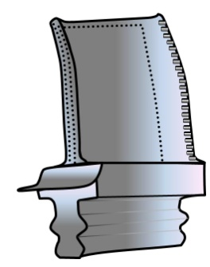

17 17 Gas Turbine Propulsion**
17.1 Turbine Engine Basics
17.1.1 Turbine Engine Types
17.2.2 The Brayton Cycle
17.2.3 Component Descriptions
17.2 Propulsion System Analysis
17.2.1 Standard Day Corrections
17.2.2 Pressure and Temperature Relationships with Flight Parameters
17.2.3 Reynold’s Number Index
17.2.4 Thrust Calculations
17.3 Turbine Engine Operation
17.3.1 Compressor operation during accelerations
17.3.2 Compressor operation during decelerations
17.3.3 Bleed are impacts during engine starts
17.3.4 Stator vane cambering effects
17.3.5 Compressor impacts due to nozzle area for turbojet engines
17.3.6 Compressor impacts due to nozzle area for turbofan engines
17.3.7 Combustion stability
17.4 Additional Information
17.4.1 Engine Stations
17.4.2 Key Propulsion Terminology
17.4.3 Common Aircraft and Associated Engines
17.4.4 Additional Propulsion Resources
17.1 Turbine Engine Basics
17.1.1 Turbine Engine Types
Three basic types of aircraft turbine include turbojets, turbofans, and Turboshafts.
The primary advantage of turbojets is their efficiency at high speed/altitude and small diameter. Turbojets are less efficient at low speed and are currently only used in older aircraft (B-52, T-38, Boeing 707).
A turbofan engine is essentially a turbojet to which a second compression system has been added. Turbofans are further divided into low bypass and high bypass engines, where bypass describes the amount of air used by the fan that bypasses the compressor. In low bypass (0-1 bypass ratio) engines, most of the thrust comes from the nozzle. In high bypass (1-11+ bypass ratio) engines, most the thrust comes from the fan. Turbofans are the most popular engine for new medium and large aircraft due to the range of bypass ratios available, allowing optimization for most flight regimes. Turbofan advantages include: high thrust and low fuel consumption at low airspeed (subsonic), lower engine noise compared to turbojets, and generally lower operating temperatures allowing the use of lower cost materials. Turbofan disadvantages include large engine diameters that can increase aircraft drag and cause ground clearance issues and slower engine response compared to turbojets.
Turboprops generate the majority of their thrust by driving an external propeller. They generally operate at slightly higher altitudes and faster airspeeds than conventional piston driven aircraft, but performance at higher mach numbers is limited due to compressibility effects at the propeller tip. The primary advantages of turboprops compared to reciprocating engines are fuel consumption improvements and increased reliability.
Engine Type Operating Envelopes
Some applications have unique flight envelopes and are required to support large horsepower extractions to power on-board sensors (e.g. Global Hawk).
17.1.2 The Brayton Cycle
Aircraft turbine engines generally operate on the Brayton thermodynamic cycle. A simplistic explanation is provided using pressure-volume (P-V) and temperature-entropy (T-S) diagrams.
Ideal thermodynamic cycles (dotted) are those where:
1) The inlet and compressor (engine stations 0 to 3) isentropically compress the air.
2) The combustor (engine stations 3 to 4) provides isobaric heating.
3) The turbine and nozzle (engine stations 4 to 9) isentropically expand the air to free stream jet.
4) Free stream exhaust jet is at a higher velocity and temperature (and entropy) than the inlet.
In the real case (solid/dashed line), the inlet and compressor induce increased entropy (friction losses), the combustor has pressure losses, the turbine and exhaust nozzle do not perfectly expand the air to free stream pressure, and the exhaust jet is still at a higher velocity and temperature than the inlet. All of these factors decrease the efficiency of real turbines.
Turbojet, Real (solid/dashed) & Ideal (dotted)
A more complex case is the two spool turbofan with afterburning. Although following the same trends, the additional “reheat” from the afterburner (stations 5-7) provides a significant increase in free stream exhaust jet temperature and velocity. Because the increase in temperature is never recovered by a turbine, actual efficiency is lower.
Turbofan With Afterburning, Real (solid/dashed) & Ideal (dotted)
17.1.3 Component Descriptions
(Example Axial Dual-spool Augmented Turbofan)
Inlet (Station 0 to 2)
Inlets usually provide laminar, subsonic flow with minimal total pressure loss across a variety of Mach numbers and angles of attack. Subsonic inlets are typically simple with fixed geometry and supersonic inlets range from simple to complex using variable bleeds and bypasses depending on the operating conditions.
Complex Supersonic Inlet Simple Subsonic Turbofan Inlet
Compressor (Fan/Core) (Stations 2 to 3)
 The low pressure compressor, or fan, provides increased thrust and efficiency by accelerating a larger mass flow of air (compared to the high pressure compressor). It consists of stators (S) and rotor blades (R). A splitter in the duct following the fan separates airflow from the bypass duct. Below example, the fan is coupled via an inner shaft to the low pressure turbine.
The low pressure compressor, or fan, provides increased thrust and efficiency by accelerating a larger mass flow of air (compared to the high pressure compressor). It consists of stators (S) and rotor blades (R). A splitter in the duct following the fan separates airflow from the bypass duct. Below example, the fan is coupled via an inner shaft to the low pressure turbine.
Typical Low Pressure Compressor Typical High Pressure Compressor
The high pressure compressor provides airflow to the combustor and turbines. It can have many stages, each stage consisting of a rotor and a stator. The rotors impart kinetic energy into the airflow, while the stators convert the kinetic energy to a pressure rise. For improved operation, stators can also have variable geometry. Overall compression ratios can be 10 to 40 times ambient and the temperature rise more than 600 deg F. Bleed air from later compression stages can also be extracted to cool the turbine blades and provide airflow for auxiliary power or ice protection. Shaft power is also extracted through an engine mounted gearbox attached to the high pressure spool to power electrical and hydraulic systems.
Combustor (Station 3 to 4)
Fuel is injected, ignited, and burned in the combustor. Modern combustors are annular, while older designs consisted of multiple cans surrounding the shaft. Combustors slow the airflow entering the chamber to allow fuel-air mixture and prevent combustion outside the chamber. If air velocities are too great in the combustor, combustion stability is affected.
Combustor.png
Annular Combustor Combustor Cross-Section
Combustors induce turbulence into the air to achieve proper fuel-air mixing and even burning. Approximately half of the air entering the combustor is used for the combustion process; the remainder cools the combustor panels. The exhaust gas temperature can exceed 3,100 deg F, leading to significant material challenges within the combustor and turbine sections.
Turbine (Station 4)
 Turbines extract energy from the combustor exhaust to drive the compressors. Extreme blade and vane temperatures drive special materials and/or active cooling requirements. State-of-the-art turbines may include single crystal nickel based alloys with thermal barrier coatings, internal cooling passages, and external film air cooling.
Turbines extract energy from the combustor exhaust to drive the compressors. Extreme blade and vane temperatures drive special materials and/or active cooling requirements. State-of-the-art turbines may include single crystal nickel based alloys with thermal barrier coatings, internal cooling passages, and external film air cooling.
The high pressure turbine powers the high pressure compressor, and the low pressure turbine powers the low pressure compressor.
Augmentor (Station 6)
Afterburning burns fuel between the turbine and the exhaust nozzle to reheat the airflow. This reheat increases flow velocity and thus thrust, but because the temperature increase is not recovered as in the turbine, afterburners are very inefficient. While an increase in thrust can be obtained from a larger engine, the commensurate increase in weight and drag is not economical for short period requirements (e.g. aircraft takeoff).
Exhaust Nozzle (Station 7 to 9)
Air from the augmentor exits through the exhaust nozzle to provide the airplane with thrust. Efficient exhaust nozzles also reduce aircraft drag by matching exhaust pressure and ambient pressure. They can provide thrust vectoring to enhance aircraft stability, thrust reversing to improve aircraft braking, and noise suppression. Large commerical jets usually have fixed nozzles that are optimized for one cruise condition. Fighter aircraft often have variable nozzles to increase performance at all flight conditions.
Accessories
Turbine engines require a variety of accessories to support engine and aircraft functions. Engine control can be managed by hydro-mechanical, analog, digital, or a combination of the control types. Modern engines use a full authority digital engine control (FADEC) to schedule engine operation throughout its operating range. Engine or aircraft sensors (e.g. Tt2) provide operating conditions to the engine controller. An anti-ice valve can supply bleed air to the engine face struts to prevent ice build-up. A gearbox also extracts power from the high pressure compressor shaft to run electrical generators and aircraft hydraulic systems.
17.2 Propulsion System Analysis
Typically, a propulsion system’s operation is segregated into the five sub-categories or disciplines.
Overall: Integrated System Utility (Does it meet the users’ needs?). Topics include adequate engine bay ventilation, anti-ice, gun or gas ingestion, and inlet compatibility.
Performance: The ability to produce thrust at a prescribed level with a specified fuel flow. Usually prescribed over the life of the engine and is modeled with a propulsion system simulation. If an inlet rake is used for testing, we can calculate inlet recovery, which is an integral part of engine/aircraft performance.
Operability: The ability to resist or recover from an engine instability. These instabilities primarily refer to compressor stall or surge, which are aggravated by inlet temperature and pressure distortions. However, operability can include several other aspects, such as flameout, overspeed, overtemp, engine starting, and afterburner lighting and stability.
Response: The ability to change thrust conditions within a prescribed time in response to a commanded change.
Life/Durability: The ability to withstand extended operating conditions (pressure, temperature, and rpm) over a prescribed lifetime (usually described in terms of engine operating hours or Total Accumulated Cycles) at a specified level of performance and operability.
A number of Aerospace Recommended Practices (ARP) exist to aid in standardization of gas turbine design, testing, and analysis. Aerospace Information Reports (AIR) also provide similar guidance. This handbook scope does not include the theory and concepts of these practices, however, some of the practices most relevant to propulsion system analysis are presented in the Additional Propulsion Resources section.
17.2.1 Standard Day Corrections
Due to varying atmospheric conditions, engine tests are rarely conducted at the same flight conditions. Therefore, to compare tests results, data must be standardized to a common flight condition. By applying standard day corrections, the effects of changes in temperature and pressure can be removed from test results.
| Quantity | Normal | Corrected |
|---|---|---|
| Air mass flow rate | \[{\dot{m}}_{i}\] | \[{\dot{m}}_{\mathrm{ci}} = \frac{{\dot{m}}_{i}\sqrt{\theta_{i}}}{\delta_{i}}\] |
| Fuel flow rate | \[{\dot{m}}_{f}\] | \[{\dot{m}}_{\mathrm{fc}} = \frac{{\dot{m}}_{f}}{\delta_{2}\sqrt{\theta_{2}}}\] |
| Rotational speed | \[N\] | \[N_{\mathrm{ci}} = \frac{N}{\sqrt{\theta_{i}}}\] |
| Thrust | \[F\] | \[F_{c} = \frac{F}{\delta_{0}}\] |
θi=total temperature ratio (\(\theta_{i} = \frac{T_{\mathrm{ti}}}{T_{\mathrm{ref}}}\)) and δi=total pressure ratio (\(\delta_{i} = \frac{P_{\mathrm{ti}}}{P_{\mathrm{ref}}}\))
\[Values can also be found in the standard atmosphere table, Section 3-14. Reference is sea-level, standard day. These values are also corrected for Mach number in Figure x-11.\]
17.2.2 Pressure and Temperature Relationships with Flight Parameters
Two of the main inputs to a propulsion system are engine face pressure and temperature (Pt2 and Tt2 respectively), yet the flight envelope is defined in altitude, airspeed, and Mach number. Consequently, it is helpful to be able to translate from one to the other. Unfortunately, because many engine inlets are variable, and therefore introduce varying pressure and temperature losses, the handbook assumes Pt2=Pt0 and Tt2= Tt0. The following chart is useful when describing the engine operating conditions relative to flight conditions.
17.2.3 Reynolds Number Index
Assuming the characteristic length of an engine is constant in differing operating environments, another way of describing the pressure and temperature relationship is with the Reynolds number index. Similar to standard day corrections, the Reynolds Number Index provides a method of comparing engine operation across varying inlet-pressure loses, inlet temperatures, flight speeds, and altitudes. The Reynolds Number Index is:
\[\mathrm{Re}_{i} = \frac{\delta_{2}}{\varphi\sqrt{\theta_{2}}}\]
where
\[\varphi = \frac{718.2\left( \theta_{2} \right)^{3/2}}{T_{t2} + 199.5},\ \delta_{2} = \frac{P_{t2}}{2116},\ \theta_{2} = \frac{T_{t2}}{518.7}\]
Here, Pt2 is in psf, and Tt2 is in degrees Rankine.
Pt2 and Tt2 are assumed to be equal to aircraft total pressure and temperature. The actual in-flight Reynolds Number Index depends on inlet recovery losses, since these are the conditions in which the engine is operating.

Reynolds Number Index versus Altitude and Mach Number
17.2.4 Thrust Calculations
Various formulae exist to calculate gross engine thrust (Fg). However, modern engines are too complex for standard textbook formulas to accurately predict thrust; this is normally left to complex computer algorithms. The current standard for new models is the Numerical Propulsion System Simulation (NPSS). Despite this, a control volume approach relying on conservation of momentum will provide gross engine thrust if the required parameters are known.
\[Thrust = \frac{\left( {\dot{m}}_{9} + {\dot{m}}_{\mathrm{fuel}} \right)V_{9} - {\dot{m}}_{0}V_{0}}{g_{c}} + (P_{9} - P_{0})A_{9}\]
Where subscript 9 represents the nozzle exit and subscript 0 represents the freestream conditions. \(\dot{m}\), V, and, P represent mass flow rate, velocity, and static pressure respectively.
Variations and simplifications of this formula exist:
|
\[Thrust = \frac{{\dot{m}}_{0}(V_{9} - V_{0})}{g_{c}}\] |
|---|---|
| High Bypass Turbofan (Separate Streams) | \[Thrust = \frac{{\dot{m}}_{\mathrm{fan}}}{g_{c}}(V_{\mathrm{fan}} - V_{0}) + \frac{{\dot{m}}_{\mathrm{core}}}{g_{c}}(V_{9} - V_{0})\] |
Atmospheric temperature, Mach, and altitude also significantly affect engine thrust and efficiency.

17.3 Turbine Engine Operation
Compressor maps allow engine operation evaluation, showing corrected engine airflow (fan or core) versus pressure ratio. It is critical to know where an engine is operating within the compressor map in order to avoid stalls and flameouts. The following sections review compressor operation during several maneuvers and geometry changes.
17.3.1 Compressor operation during accelerations
Above is a typical engine acceleration compressor map. As the engine accelerates from idle to maximum power, the engine follows the transient operating line scheduled by the engine controller. This usually includes surge prevention logic (e.g. pressure ratio limits as a function of airflow). Engine surge susceptibility is generally determined by either component bench tests or from altitude development tests of the full scale engine. Once the surge region is determined for the baseline engine, it can be further reduced by inlet distortion, power extraction, manufacturing tolerances, deterioration, or thermal transients, which affect compressor tip clearances. These affects are considered when determining the transient acceleration schedule needed to provide sufficient surge margin in the most demanding situations.
17.3.2 Compressor operation during decelerations
Above is a typical engine deceleration compressor map. As the engine decelerates to idle power, the engine follows the transient operating line. To protect from combustor blowout during the deceleration, transient operation schedules usually include blowout prevention logic that schedules a minimum fuel to air ratio within the combustor as a function of engine airflow. This blowout region is usually determined by combustor bench tests or from altitude development tests of the full scale engine. Once the blowout region is determined, the engine schedules are set to include margin to account for engine-to-engine variability.
17.3.3 Bleed air impacts during engine starts
Above is a typical engine start compressor map. Turbine engines can be challenging to accelerate from off to idle power due to little stall margin at low airflow conditions. As a means to increase engine surge margin by reducing compressor back pressure and allowing quicker accelerations, engine bleed air can be removed from the engine core via a bleed valve. As the engine approaches idle power, the bleed air valve closes and the engine accelerates the remaining way to idle.
17.3.4 Variable Stator vane cambering effects
Above are typical engine compressor stator and rotor velocity diagrams. Stator vanes control engine surge margin and thrust; as they are cambered closed, the throat area between the vanes is reduced, thereby decreasing airflow. Cambering the vanes also decreases the incidence angle of the rotor blade. These lower airflows and reduced incidence angles increase engine surge margin.
Above is a compressor map illustrating how variable geometry and stator vane cambering can be used to affect engine operation and performance. The solid lines show how the compressor would operate if the stator vanes remained fixed in the axial position. The dashed lines show how the compressor would operate if the stator vanes remained fixed in the cambered closed position. When the stator vanes are cambered closed, additional surge margin is provided, and when the stator vanes are axial, additional airflow capability (or thrust) is provided. As a result, engines typically camber closed stators at low airflow to increase surge margin and acceleration capability, then camber the vanes axial open to maximize performance at higher engine rpms.
17.3.5 Compressor impacts due to nozzle area for turbojet engines
Above is a compressor map illustrating impacts to stability margin from opening and closing the engine exhaust nozzle for a single-spool engine (e.g. J85 engine in T-38 aircraft). In this example, it is shown that stall margin is insufficient at lower airflows with the smaller nozzle area. Opening the nozzle for this single spool configuration moves the engine away from surge. As a result, a typical engine might run nozzle open at idle power to reduce thrust and keep the nozzle open until engine stability was no longer a concern.
17.3.6 Compressor impacts due to nozzle area for turbofan engines
(mixed flow, proximate splitter)
Above is a compressor map illustrating stability margin impacts from opening and closing the engine exhaust nozzle for a turbofan engine (e.g. F100 engine in F-16 aircraft). Closing the nozzle moves the fan away from surge, which is opposite from the turbojet application. The high pressure compressor (HPC) is not impacted by the nozzle opening or closing (assuming the low pressure turbine \[LPT\] is choked). The fan and compressor’s independent reactions to nozzle movement allow the ability to set airflow and thrust independently. This is an important feature for flutter vibration or stability issues at particular rpm ranges.
17.3.7 Combustion Stability
Above is a combustion stability plot showing engine airflow versus fuel-to-air-ratio. These plots are generally developed during component bench testing and are then used by engine designers to schedule combustor or augmentor fuel flow. The plot shows regions of stable and unstable combustion. Also, the engine operates closer to a blowout region at low air mass flow (high altitude and low Mach number \[ULHC\]). Combustion instabilities can have various effects on engine operation, including blowout, running rough, and vibrations that can reduce part life.
17.4 Additional Information
17.4.1 Engine Stations
(Reference SAE ARP-755 Aircraft Propulsion System Performance Station Designation and Nomenclature for additional details)
Engine station designations provide a consistent definition of the process the gas undergoes, regardless of the type of engine cycle
The six main processes specifically isolated are:
a. kinetic compression (inlet/diffuser)
b. mechanical compression/work addition/fluidic compression (compressor/propeller)
c. heat addition or exchange (combustor/augmentor/heat exchanger)
d. mechanical expansion/work extraction (turbine)
e. kinetic expansion (nozzle)
f. mixing (mixer/ejector/eductor).
Dual Spool Turbofan With Afterburning
0 – Free stream air conditions
1 – First station of interest to the engine manufacturer. Inlet or aerodynamic interface plane (AIP).
2 – First compressor or fan front face
3 – Last compressor discharge or combustor entrance
4 – Combustor discharge or first turbine entrance
5 – Last turbine discharge
6 – Mixer or afterburner entrance
7 – Exhaust nozzle entrance
8 – Exhaust nozzle throat
9 – Exhaust nozzle discharge
Notes:
Incremental (or sub) stations may be indicated with suffix nomenclature (e.g. 2.5 to indicate fan discharge on a dual spool compression system).
There are a multitude of variations on this theme. SAE ARP-755 includes descriptions for most turbine engine configurations.
17.4.2 Key Propulsion Terminology
Aerodynamic Interface Plane - A defined plane of intersection between the inlet and the engine.
Afterburner - Any type of auxiliary (post turbomachine) combustion to enhance propulsion system thrust. Also known as the augmentor or reheat.
Compressor Loading -The general ratio of work across the compressor stages. Forward compressor loading indicates the forward stages are more loaded (higher pressure ratio) than the aft stages.
Compressor Map - A compressor’s total pressure ratio defined by corrected airflow and corrected rotation speed.
Corrected - An adjustment for standard day temperature and/or pressure (at an engine station) to an engine parameter (like rotational speed, air flow or fuel flow). Also see referred.
Delta - Pressure ratio, \(\delta_{i} = \frac{P_{\mathrm{ti}}}{P_{0}}\), where i is the reference station.
Flame-out - Can be synonymous with blow-out; however, it is more typically used in reference to the main combustor flame extinguishing.
Gross Thrust - The momentum change at the nozzle exit or aft side of the propeller. The first term in the thrust equation.
Horsepower Extraction - Any form of removal of power (bleed or mechanical) from a turbomachine other than for the generation of thrust.
Inlet Compatibility - A type of test used to determine if the combined effects of inlet distortion and engine stability are compatible (e.g.; no stalls occur).
Inlet Distortion - The measurement of variation in pressure, temperature, or vector at the aerodynamic interface plane.
Inlet Recovery - The average total pressure at the Aerodynamic Interface Plane divided by the free stream total pressure.
Instability - Can be used in many contexts. The two main contexts are in combustion stability and compressor stability. The former refers to a flame’s (either combustor or augmentor) ability to stay lit and the later to compression system flow disturbance.
Operability - The sub-discipline of propulsion related to a turbine engine’s characteristic operational limits. This includes but is not limited to the regions of the flight envelope where stalls or flame-outs may occur, where augmentation is limited, or where airstarts can be accomplished.
Recycle - A full no-light or blowout and relight sequence where the engine control continues to try to light the combustor or augmentor. Most typically refers to the augmentor.
Referred - An adjustment for standard day temperature and/or pressure (at an engine station) to an engine parameter (like rotational speed, air flow or fuel flow). See also corrected.
Reynolds Number Index - Ratio of actual Reynolds Number to standard atmosphere Reynolds Numbers assuming a constant length scale.
Rotating Stall - A cyclic disruption of airflow (surge) across one or more fan or core compressor blades. May or may not be noticeable by the operator, but can produce cycle fatigue damage to the compressor blades.
Rumble - A low frequency augmentor induced vibration.
Screech - A combustion induced acoustic vibration in the augmentor. Usually in the several hundred Hertz frequency range
Stagnation - A series of stalls that have become non-recoverable (no response to engine control inputs—requires the disruption of fuel flow to clear). The series of stalls has disrupted the airflow through the compressor so severely that ram flow will not recover the engine. Characterized by no engine core response and increasing exhaust gas temperature.
Stall - A disruption of airflow across one or more fan or core compressor blades. Also known as surge.
Stage - A blade (or rotor) and stator pair.
Station - Defined locations within a propulsion system. See Section 20.2.1
Stator - The non-rotating blades of a stage within a turbomachine compressor or turbine.
Swirl - Non-axial vector of inlet airflow.
Temperature Profile - Usually used in reference to the span wise temperature distribution across the turbine inlet guide vanes.
Theta -Temperature ratio, \(\theta_{i} = \frac{T_{\mathrm{ti}}}{T_{0}}\), where i is the reference station
Thrust Specific Fuel Consumption - The amount of fuel required to produce a unit of thrust,
TFSC =
Total Accumulated Cycles - A conglomerate measurement (based on an empirical relationship) of the number of cycles an engine has experienced. It is used as a measure of engine health or life.
Upper Left Hand Corner - An area of the flight envelope chart (Mach Number on the x-axis and altitude on the y-axis) characterized by areas of low speed and high altitude.
Windmill - The free rotation of the rotational components of the engine driven solely by ram airflow.
17.4.3 Aircraft and Associated Engines
| Military Aircraft | ||
|---|---|---|
| Designation | Name | Engine |
| A-10 | Thunderbolt II | TF34-GE-100/-100A |
| AC-130 | Gunship | T56-A-15 |
| AH-1 | Cobra | T400-CP-400, T53-L-703 |
| AH-64 | Apache | T700-GE-701C |
| AV-8 | Harrier | F402-RR-401/402, F402-RR-406A/408 |
| B-1 | Lancer | F101-GE-102 |
| B-2 | Spirit | F118-GE-100 |
| B-52 | Stratofortress | J57-PW-43WB, TF33-PW-3/103 |
| C-12 | Huron | T74 |
| C-130 | Hercules | T56-A-15/7/7B/9D, RR-AE2100D3 |
| C-135 | Stratolifter | J57-PW-59W, TF33-PW-5 |
| C-141 | Starlifter | TF33-PW-7/7A |
| C-17 | Globemaster III | F117-PW-100 |
| C-20 | Gulfstream III | F113-RR-100, F126-RR-100 |
| C-23 | Sherpa | T101-CP-100 |
| C-37 | Gulfstream V | RR-BR710A1 |
| C-5 | Galaxy | TF39-GE-1A/1C, F138-GE-100 |
| CH-3 | Jolly Green Giant | T58-GE-1/3/100 |
| CH-47 | Chinook | T55-L-5/7/11/712/714 |
| CH-53 | Sea Stallion | T64-GE-412 |
| CV-22 | Osprey | T406-AD-400 |
| E-3 | Sentry | TF33-PW-100A |
| E-8 | Joint Stars | TF33-PW-102C |
| F-14 | Tomcat | TF30-PW-412A, F110-GE-400 |
| F-15 | Eagle | F100-PW-100/220/220E/229/229A |
| F-16 | Fighting Falcon | F100-PW-200/220/220E/229/229A, F110-GE-100/129/132 |
| F-18 | Hornet | F404-GE-400, F414-GE-400 |
| F-22 | Raptor | F119-PW-100 |
| F-35 | Lightning II | F135-PW-100, F136-GE-100 |
| F-4 | Phantom II | J79-GE-2/8/10/15/17, F103-GE-100 |
| F-5 | Tiger/Freedom Fighter | J85-GE-13/21, F404-GE-400 |
| KC-10 | Extender | F103-GE-101 |
| KC-135 | Stratotanker | J57-PW-43WB/-59W, TF33-PW-102, F108-CF-100 |
| MQ-9 | Reaper | Honeywell TPE331-10 |
| MQM-107 | Streaker | J402-CA-700/702 |
| MQM-74 | Chukar | J400-WR-400/401 |
| RQ-3 | DarkStar | F129-WR-100 |
| RQ-4 | Global Hawk | F137-AD-100 |
| SR-71 | Blackbird | J58-PW-4 |
| T-1 | Jayhawk | PW-JT15D |
| T-2 | Buckeye | J85-GE-4 |
| T-33 | Shooting Star | J33-A-5 |
| T-37 | Tweet | J69-T-25A |
| T-38 | Talon | J85-GE-5/H/J/L/R/S |
| T-6 | Texan II | PW-PT6A-68 |
| U-2 | Dragon Lady | F118-GE-101 |
| X-31 | F404-GE-400 | |
| X-47 | Pegasus | JT15D-5C |
| Civilian Aircraft | ||
| Boeing 737 | PW-JT8D, CFM-56 | |
| Boeing 747 | PW-JT9D, GE-CF6, RR-RB211, GEnx | |
| Boeing 757 | RR-RB211, PW-2000 | |
| Boeing 767 | PW-JT9D, PW-4000, GE-CF6, RR-RB211, RR-800 | |
| Boeing 777 | GE-90, PW-4000 | |
| Boeing 787 | GEnx, RR-1000 | |
| Airbus A300 | GE-CF6, PW-JT9D, PW-4000 | |
| Airbus A310 | GE-CF6, PW-JT9D, PW-4000 | |
| Airbus A320 | CFM-56, PW-6000, IAE-V2500 | |
| Airbus A330 | GE-CF6, PW-4000, RR-700 | |
| Airbus A340 | CFM-56, RR-500 | |
| Airbus A380 | RR-900, GP-7000 |
17.4.4 Additional Propulsion Resources
Jack Mattingly’s Engine Design Site
http://www.aircraftenginedesign.com/
NASA EngineSim
http://www.grc.nasa.gov/WWW/K-12/airplane/ngnsim.html
AeroFiles
http://www.aerofiles.com/home.html
NASM Smithsonian National Air and Space Museum
National Museum of the US Air Force
http://www.nationalmuseum.af.mil/
Aerospace Recommended Practices
ARP1420 Gas Turbine Engine Inlet Flow Distortion Guidelines
AIR1419 Inlet Total-Pressure-Distortion Considerations for Gas-Turbine Engines
ARP4990 Turbine Flowmeter Fuel Flow Calculations
Additional standards for Emissions, Test Cell Correlation, Noise, Temperature Measurement, and Health Management are also available through SAE International’s website: http://standards.sae.org/power-propulsion/engines/gas-turbines/standards/